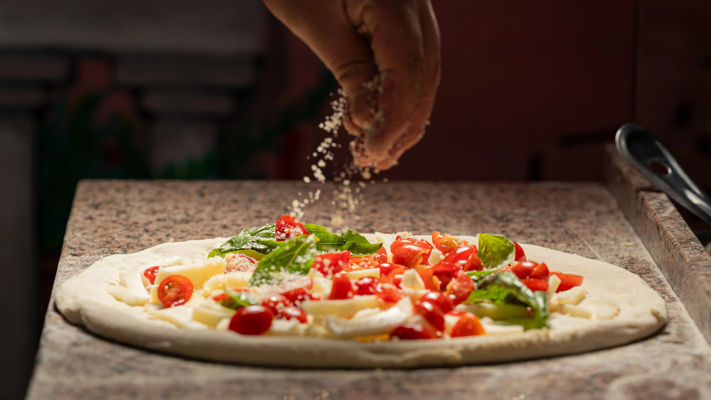

Una pizca de nuestras cifras
-
+ 30 años
de experiencia pizzera
-
+ 1000 expos
Realizadas en nuestro local
-
+ 20 sabores
Sabores para encontrar tu favorita
-
100% barrio
Una pizzería con mucha personalidad
-
1 tren
Con destino a tus pedidos
-
+365 días
Con ganas de pizza
Una historia que se sigue amasando
Desde 1988, Pizca forma parte de Guadalajara. Más de tres décadas compartiendo pizzas, reuniendo a generaciones y formando parte de esos planes que siempre apetece repetir.
Somos una pizzería familiar, de esas en las que lo importante no es solo lo que llega a la mesa, sino también con quién lo compartes. Un lugar para gente joven, menos joven y de todas las edades, porque aquí siempre hay sitio para uno más.
Con los años hemos crecido sin perder lo que nos hace ser Pizca: nuestra cercanía, nuestras ganas de hacer las cosas a nuestra manera y el cariño por nuestro barrio.
Las pequeñas cosas, que nos hacen Pizca.
-
La diversión en los detalles
Un circuito de canicas recorre una de nuestras paredes y convierte cualquier espera en un momento de curiosidad y diversión para pequeños y mayores.
Tu pizza en camino
Un tren a escala recorre el local para anunciar cuándo está listo tu pedido. Porque en Pizca hasta la forma de servirte tiene su propia historia.
Paredes que dan para mucho
Reservamos un espacio gratuito para que artistas y creadores puedan mostrar sus obras, compartir su talento y acercar el arte a quienes nos visitan.